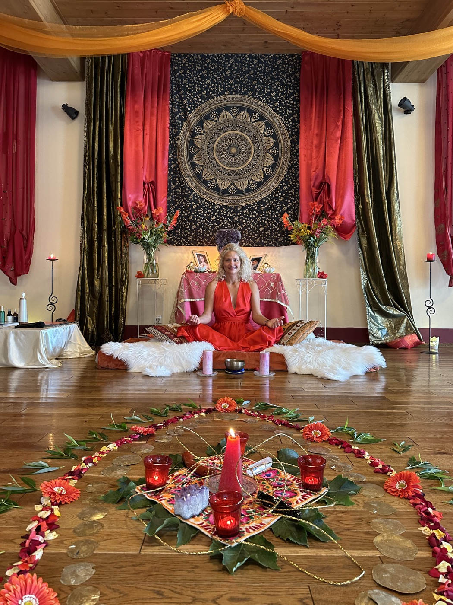
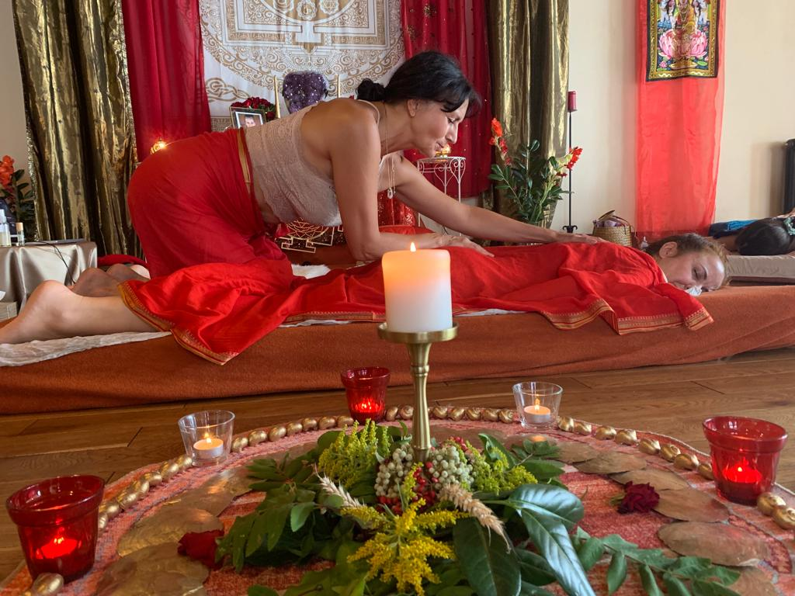
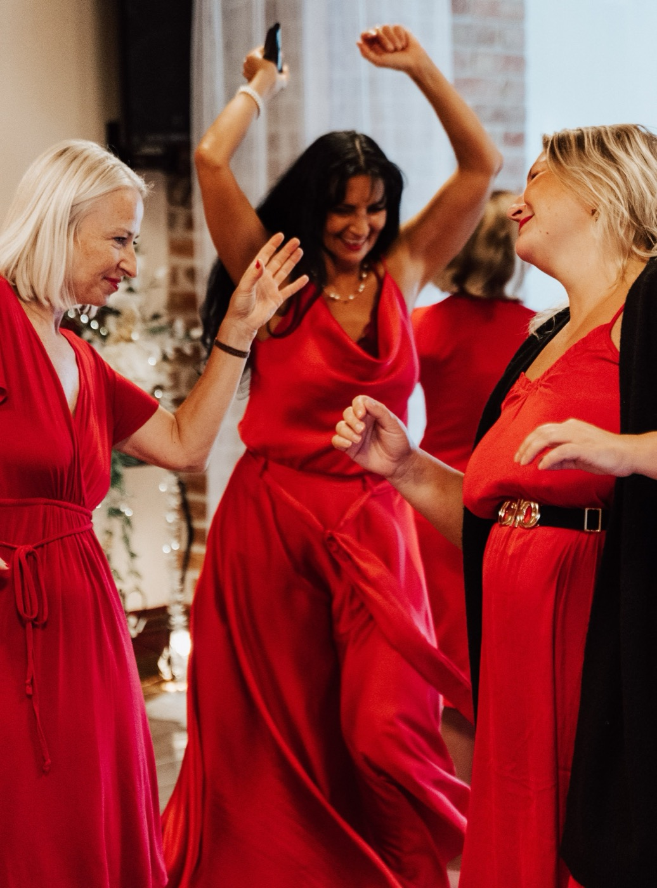
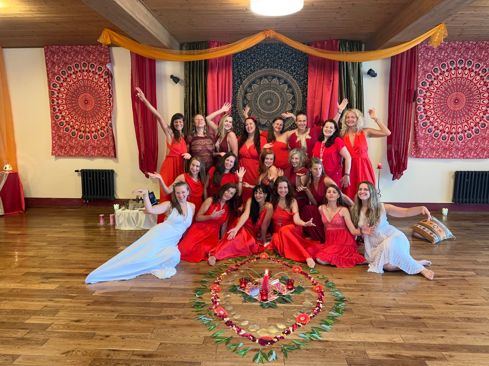
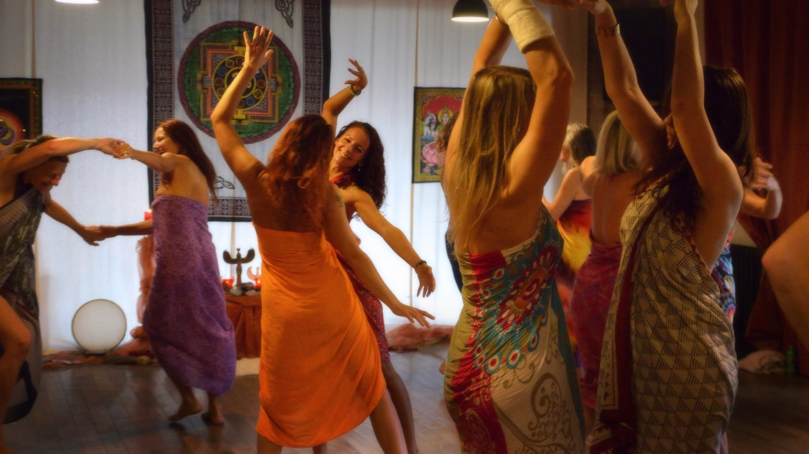
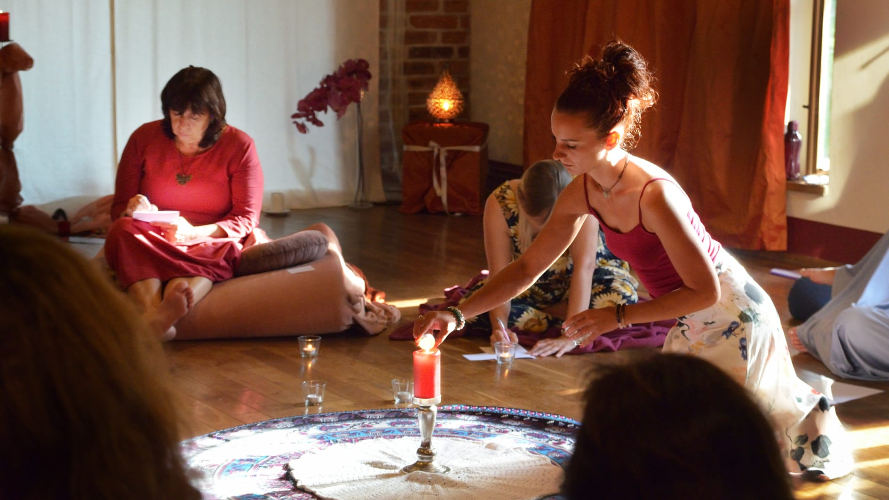
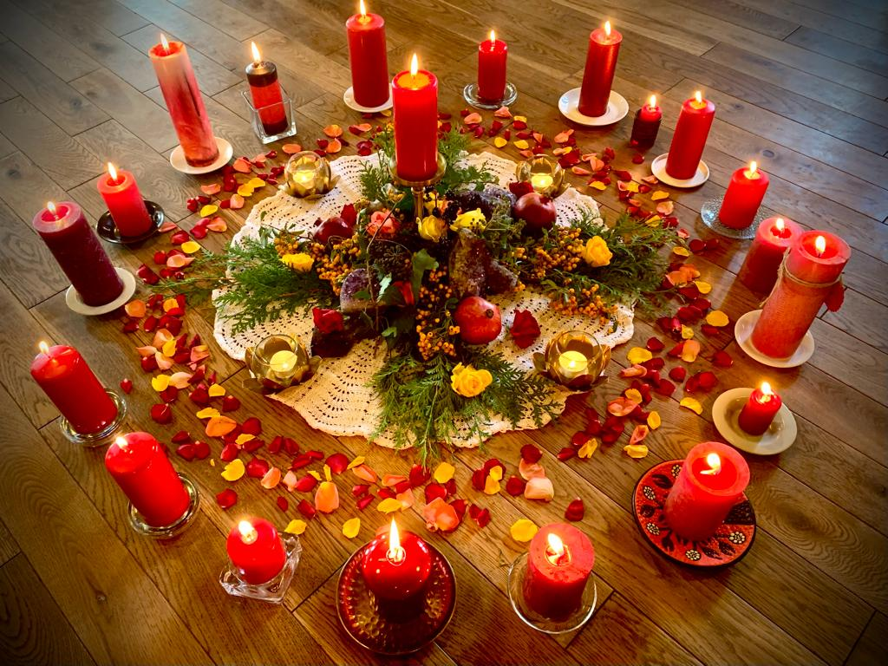

Probuzení přirozeného toku ženské energie Shakti
Otevíráme se emočnímu plynutí, smyslnosti a hlubšímu vnímání vlastní životní síly. Budeme vstupovat do prostoru podbřišku a lůna, ve kterém je uložená ženská tvořivost, citlivost, vášeň i schopnost hluboké transformace.
Skrze element vody budeme rozpouštět starou emoční zátěž, pocity studu, viny a oddělení od vlastního těla. Postupně se budeme navracet k jemnosti, extázi, přirozené orgasmicitě a vědomému prožívání sexuality jako posvátné součásti ženského bytí.




Emoční tekutost a cykličnost Shakti
Emoční chaos oslabuje ženský magnetismus a přerušuje spojení s dělohou, jóni i vlastní intuicí. V tomto modulu proměníme stagnující emoce v živou sílu a otevřeme se cyklům života, smrti a znovuzrození jako branám hluboké transformace.
Navrátíme se ke zdravým kořenům, božské erotické podstatě ženy a schopnosti prožívat extázi těla i duše. Objevíme své tělo jako božsky vyladěný nástroj, skrze který volně proudí životní síla Shakti.
Když žena probudí svůj posvátný Erós, stává se zdrojem života, tvořivým kanálem a vyživující silou. Z její plnosti přirozeně vznikají vědomé vztahy, láska i prostor, ve kterém může růst muž, žena i nový život.

Čeho se v tomto modulu dotkneme
otevření posvátné erotické energie a smyslnosti
probuzení emoční tekutosti a přirozeného toku ženské energie
vědomá práce s energií lůna a druhé čakry
rozpuštění pocitů studu, viny a starých zranění
hlubší propojení sexuality, lásky a vědomí
objevování intimity, důvěry a pravdivosti v těle
práce s elementem vody a emoční transformací
probuzení životní síly Kundaliní a ženské vášně


Návrat k citlivosti, důvěře a smyslnosti

Prostor pro uvolnění
Tento modul otevírá jemný a vědomý prostor, ve kterém můžeš postupně odložit napětí, vnitřní obrany i staré příběhy spojené s tělem, ženstvím a intimitou.

Práce s emocemi a tělem
Skrze dech, vědomý pohyb, meditativní přítomnost, tantrické techniky a práci s emocemi se budeš navracet k hlubší citlivosti, uvolnění a důvěře sama v sebe.

Posvátné rituály a energie
Vědomý dotek, ženské rituály a práce s energií jsou jemným návratem do těla jako chrámu vědomí, ve kterém se znovu probouzí láska, smyslnost a přirozený tok životní energie.

Centrum Buchov
Celý program probíhá uprostřed přírody, v malebném a energií naplněném prostředí centra Buchov. Prostor podporuje hluboké uvolnění, citlivost, propojení s tělem i přirozenými rytmy života.
Centrum se nachází v romantické středočeské krajině na dohled od bájné hory Blaník. Okolní louky, lesy a hluboký klid přírody přirozeně podporují ztišení a otevření se přirozenému toku vlastní energie.
Chceš zjistit více o průběhu školy, praktických informacích i místě konání školy?
Nahlédni do prostoru druhého setkání






„Prostřednictvím této cesty odhalení našeho sexuálního potenciálu přeměníme emoční tekutost, tvůrčí hojnost a extázi na nový způsob života."— Ma Ananda Sarita
Pokud cítíš, že tě tato cesta volá, zvu tě vstoupit do prostoru druhého iniciačního modulu a otevřít hlubší spojení se svým tělem, emocemi, smyslností a ženskou energií.